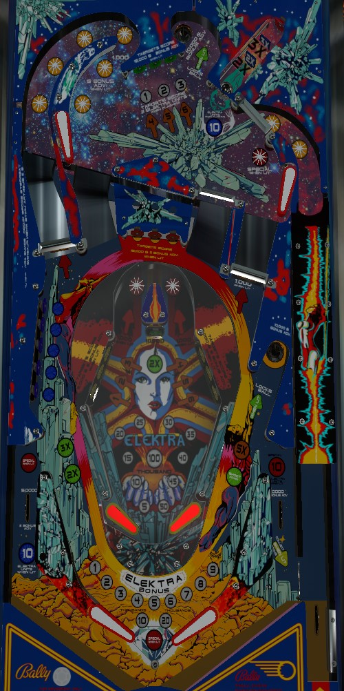

For very quick points, shoot the right saucer to light a spinner, then whale on the lit spinner. For big points and game progression, you'll want to do a little of everything. Complete 1-2-3, then shoot the upper left star rollovers in the flashing direction, then complete 4-5-6 to qualify the top lock for multiball. Complete blue or red standup targets a whole lot of times to light the lower right lock. More importantly, though, hit flashing blue standup targets or top green standup targets to award Elektra Units, which gives you more time on the lowest playfield after you drain the ball out of the main playfield.
Unlit green standup targets score 5,000 points. Lit targets score 15,000 points and a bonus advance. Flashing targets score 15,000 points, a bonus advance, and 2 Elektra Units. Hit a flashing target to light it. The goal is to complete 1-2-3 in order. Once 1-2-3 is completed, the star rollovers in the back left will begin flashing in a rotating manner. The game now wants you to shoot this curved loop area in the direction that the star rollovers are moving; this direction alternates every 10 seconds or so. The easiest way to do this is by shooting the far-left or center-left ramps to go clockwise or anticlockwise respectively. Shoot the loop in the correct direction, or shoot the upper playfield's captive ball, to make one of the green targets flash for 4-5-6. Once a target is flashing for 4-5-6, hit that target to light the 4-5-6 number solidly. Completing 4-5-6 lights the top saucer to lock a ball for multiball. To release this locked ball, complete 1-2-3 in order again.
Star rollovers in the upper left loop score 100 points when not lit or 1,000 points and a bonus advance when lit.
The captive ball has two inline drop targets and one standup target. A shot to the captive ball always scores 25,000 points. The first drop target awards 2x bonus; the second awards 3x bonus; the standup target at the end of the lane awards 5x bonus and 10 Elektra Units.
The star rollover in front of the upper right flipper scores 1,000 points. After the full 1-2-3-4-5-6 sequence is completed, it will intermittently be lit for Special, off for 10 seconds then on for 10 seconds. The Special When Lit insert between the flippers denotes whether this star rollover is lit or not.
The ball can access the top playfield via any of the game's 4 ramps, which I have denoted as far-left, center-left, center-right, and far-right. The center-right ramp is one-way, and the ball can only go up it, not down; the ball can go up or down any of the other 3 ramps. Be careful of the center drain risk for a ball coming down any ramp, especially the far-left one.
At the start of the game, 1 blue target on the left is flashing. Hit this flashing target to light it and advance to the next level, where 3 targets are flashing. Hit all 3 flashing targets to light them and advance to the next level, where all 5 targets are flashing. Hit all 5 to light them solidly, qualify a ball lock in the lower right saucer, and light the left out lane for 10 Elektra Units. To release this locked ball, you either need to complete the entire blue target sequence again, or complete the 3-bank of red standup targets once. Blue targets score 5,000 points when not lit, 15,000 points and a bonus advance when lit solidly, and 15,000 points plus a bonus advance and 2 Elektra Units when flashing. The left flipper rotates which blue target(s) are lit or flashing.
On hard game settings, there are 5 phases to the blue targets, requiring 1-2-3-4-5 flashing targets instead of just 1-3-5. This game is not very fun when that setting is enabled.
The three red standup targets in the back-center can only be on or off. Hit a target to score 5,000 points and light it. Hit a lit target to score 15,000 points and 2 bonus advance. Lighting all 3 targets will unlight them, but awards goodies:
The far-left and far-right ramps have spinners in front of them. These spinners start at 100 points per spin. Making the lower right saucer when it is not lit for a lock will light the right spinner for 1,000 points per spin. Each slingshot and each spin of either spinner alternates which one is lit. Both spinners can be lit at the same time by making the right saucer, then hitting switches around the playfield until the left spinner is lit, then shooting the saucer again. The saucer itself scores 10,000 points.
Having a ball locked in both the top and lower right saucers at the same time scores an extra ball.
Flashing blue standup targets on the main playfield and flashing green standup targets on the top playfield award 2 Elektra Units. Lighting the top or lower right lock will also light the captive ball or left out lane for 10 Elektra Units respectively. A maximum of 30 Elektra Units can be accumulated. If you have enough Elektra Units, you get a free trip to the bottom playfield after you drain out of the main playfield. Each Elektra Unit corresponds to about 1 second of play on the bottom playfield. There are several game settings that determine exactly how this works:
Setting #1 requires a minimum of 6 (easy) or 10 (hard) Elektra Units to be able to play the bottom playfield.
For setting #2: on easy, there is unlimited ball save for the entire length of the Elektra Units timer. On medium, your turn ends if you drain from the bottom playfield at any time, but any remaining Elektra Units are held for your next ball. Hard works the same as medium, except the remaining Elektra Units are forfeited instead of held over.
For setting #3: on easy, you can continue playing after the Elektra Units timer has expired until you drain, but on hard, the flippers lock when time expires, forcing the end of your turn.
The bottom playfield is not very fun or impactful unless both settings 2 and 3 are set to Easy.
For the 1-2-3 and 4-5-6 standup targets on the bottom playfield: hit an unlit target to score 1,000 points and light that target. Lit targets score 5,000 points and advance the Elektra Bonus. The Elektra Bonus is advanced 5,000 points at a time to a maximum of 195,000 points. The center standup target always scores 10,000 points; to double the Elektra Bonus, first hit 1-2-3 in order *or* 4-5-6 in order *or* 1-2-3-4-5-6 in any order, then shoot the center standup target. Lighting all of 1-2-3-4-5-6 resets them. Lighting 1-2-3 or 4-5-6 lights one of the star rollovers in the center loop for 1,000 points instead of 100, which is meaningless. Use your time in the bottom playfield whaling on standup targets.
Elektra has no in lanes, but the flippers do not back up directly to the slingshots either. Instead, there is a small curved area between the two. This table geometry combined with the low friction plexiglass playfield means that pseudo-ski passes from one flipper to the other happen quite frequently. Out lanes score 5,000 points and a bonus advance; they can both be lit for a Special, and they can both be lit for 10 Elektra Units (which are a single award on the right, and separate on the left) as previously described. The right out lane has a gate back to the shooter lane for a replunge that is opened by completing the three red standup targets on the main playfield; this gate is also lit for Collect Bonus after making the three red standup targets a second time.
There is a center peg between/below the flippers. In my experience, center drains are much more common than out lane drains.
Standard bonus is advanced by any lit or flashing standup target, any lit star rollover, and either of the game's two saucers. Bonus multiplier is increased in the sequence 2x-3x-5x at the top playfield captive ball. Neither base bonus nor multiplier can be held from ball to ball. Bonus can be collected mid-ball by using the right out lane gate when Collect Bonus is lit; this mid-ball collect includes the multiplier and does not reset any part of the bonus. Max standard bonus is 5x 39,000 = 195,000 points.
Elektra Bonus is equal to 5,000 points per lit standup target hit on the bottom playfield, which can be doubled by hitting the center standup target when lit. This bonus maxes at 2x 195,000 = 390,000 points. This bonus cannot be carried or scored mid-ball in any way.
In competition/novelty play, specials score 50,000 points and extra balls score 25,000 points. Maximum one extra ball per ball in play.
On hard settings, the captive ball will not advance 4-5-6 at the top playfield targets, so you need to shoot the upper left loop in the flashing direction 3 times to do all the work needed to qualify the top saucer lock.
Progress on the center red 3-bank can be held in memory from ball to ball or discarded.